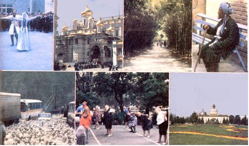

Halfway around the world and back again: MOTHER's U.S.S.R. Tour Report.
If you lived in the U.S.S.R. and developed -say -high blood pressure, early signs of ulcers, a touch of arthritis, or a persistent cough ... your doctor would probably give you a prescription for a 28-day ''rest cure". Then, your polyclinic or your employer would make arrangements for a free-or extremely inexpensive-visit to a health spa (one of that nation's hundreds) that specializes in your particular ailment.
You might, for example, spend a month in the lovely old town of Pyatigorsk (nestled in the foothills of the Caucasus) where the Czars and their nobles "took the waters" . . . or, perhaps, you'd end up in the Black Sea resort of Sukhumi, with warm evenings spent sipping iced coffee with ice cream on the crowded, friendly, palm-strewn promenade ... or you could find yourself in one of the palatial spas nestled among the magnolia, mimosa, and cypress trees in popular, sophisticated Sochi.
According to your problem, you would be assigned a combination of "natural" cures: These might include exercise, dance, singing, breathing, walking, swimming, inhalation, electr ic, light, and/or heat therapies ... mud or mineral baths ... a special diet ... and, almost inevitably, you'd be prescribed a precise number of cups of a certain mineral water to consume each day.
Does it do any good? The patients think so, and as one doctor expressed it: "We wouldn't spend all this time and money if the system didn't work! "
A marvelously diverse group of MOTHER's readers (alike only in their independency, adventurousness, stamina, and good cheer) recently returned home after spending over three exciting weeks exploring some of these very health spas, as well as the metropolises of Moscow and Leningrad ... exotic, colorful Samarkand ... the Zone of Health in the Caspian Sea town of Baku ... and the outrageously hospitable village of Tbilisi in Soviet Georgia. (A couple from California even cele brated their Georgian-style wedding in nearby Talavi ... where the feasting, dancing, and toasting lasted almost eight hours! )
And the herbalists who came along on the tour were so impressed with some of the 4,500 species of plant life found in the awesome, soaring Caucasian mountains (there are over 550 wild medicinal plants native to this region!) that "Herbs and Herbal Medicine" will be the theme of MOTHER's next tour (in May of 1980) to the U.S.S.R.... which will, once again, be arranged in cooperation with the Citizen Exchange Corps.
Furthermore, our next spring's trip won't be confined to the Caucasus! We'll also travel to Alma-Ata (near the China border), which is one of the most beautiful cities in the Soviet Union. Then we'll visit nearby Issyk-kul, where-years ago-an earthquake nearly emptied a gigantic lake and left rich soil ... in which plants such as peonies and delphiniums grow three times as big as they do anywhere else on Earth!
Next, we'll explore the Irkutsk area in Siberia, lands in which a person could (in season) live (well!) off the wild foods that grow in profusion in the beautiful forests surrounding Lake Baikal ... the largest body of fresh water in the world.
The trip will last 21 days and will cost approximately $2,000 (subject to confirmation). If you'd like to add some exotic plants to your herb collection or simply gain more knowledge about the subject, a $100 deposit (which we'll cheerfully refund up to six weeks before departure) will hold you a place. Write for more information, or stay tuned to upcoming issues for further details.
MOTHER has other travel plans for 1980, too. For example, would you like to check out the "years-ahead-of-us-all" solar energy developments in Israel? Or-come next fall-find out about food and energy production in the People's Republic of China? If so, let us hear from you! Write to: Mother's Tours, P.O. Box 70, Hendersonville, N.C. 28739.
|
 TOP ROW: A Georgian-style wedding celebration.... Russian churches are meticulously restored.... A park in Sukhumi on the Black Sea.... An old man in exotic Samarkand. BOTTOM ROW: Herds of sheep share the highways through the Caucasus.... Exercise to acco |
|
|